Archive · 2014 – 2020
Designer Notebook
Notes from Robin on design shows, sources, awards and the ideas behind the work. Kept from the original site as a record of the studio and gallery over the years.
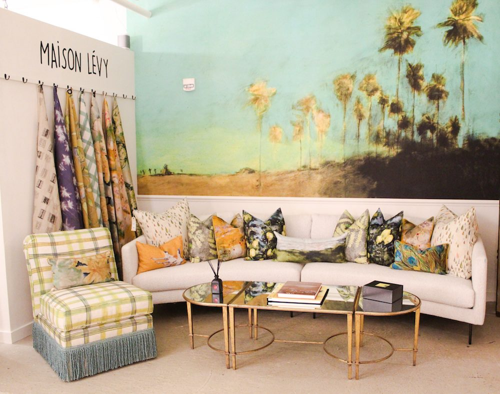
September 1, 2020
Maison Lévy Expands Presence In US Design Industry
(Pictured: Maison Lévy vignette at the Fritz Porter Showroom – Charleston, SC) As Maison Lévy’s exclusive art-based textile collection continues to capture the hearts and attention of the design world, we are pleased to announce these exciting developments: This special Parisian brand is now on display at the Fritz Porter showroom in Charleston, SC. Known for their unique […]
Read more →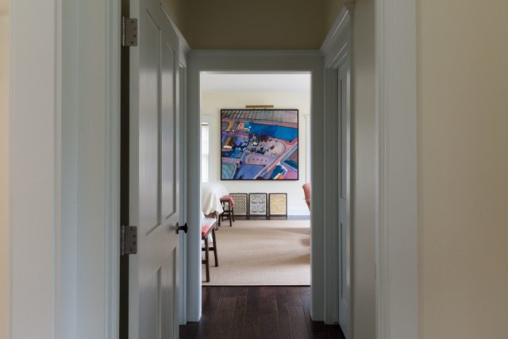
December 12, 2018
The Home – A Place for Art December 2018
This past fall I had the privilege of participating in two prestigious Chicago art events – the annual River North Fall Gallery Walk in which I designed a pair of room vignettes to feature a local artist’s paintings – and SOFA Selects, where I had the honor to select highlights of their 25th anniversary exhibit […]
Read more →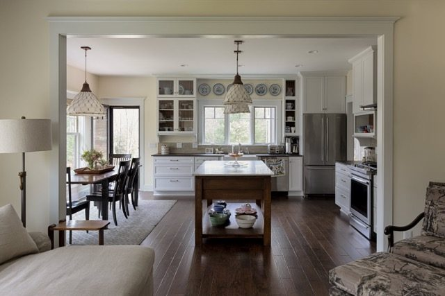
October 22, 2018
ASID Illinois – 2018 Design Excellence Award
Recently, the American Society of Interior Designers – Illinois (ASID Illinois) held its annual Celebration of Design and Design Excellence Awards. I was honored to receive first place in the Kitchen by a Small Firm category for a recent project in Michigan. The Design Excellence Awards recognizes design professionals that are either members of ASID or IIDA Illinois Chapters […]
Read more →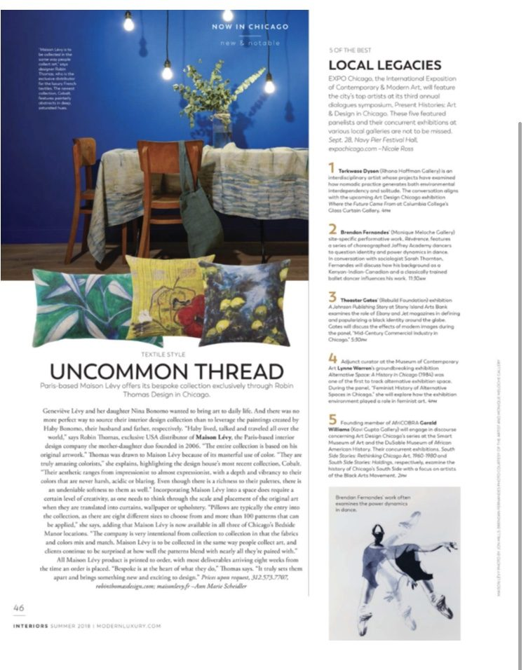
July 22, 2018
Maison Lévy Featured in Modern Luxury Interiors Chicago
In the most recent issue of Modern Luxury Interiors Chicago, the spotlight is on Maison Levy’s Cobalt collection. Read the full article on Page 46. Robin Thomas Design is the exclusive US Agent and Showroom for Maison Lévy. Learn more about the collection or our retail partners.
Read more →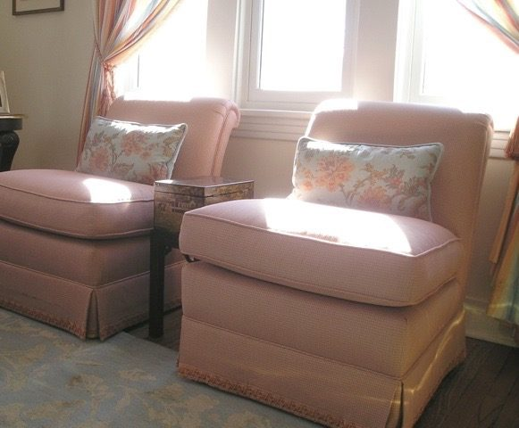
July 10, 2018
The Home – A Composition July 2018
The summer months are a time to savor longer days and a slower pace. It is also a time to embrace the outdoors and relish the abundance of open-air musical performances. As my workday is immersed in a visual world inside, the opportunity to hear an orchestral performance on a beautiful summer evening provides the […]
Read more →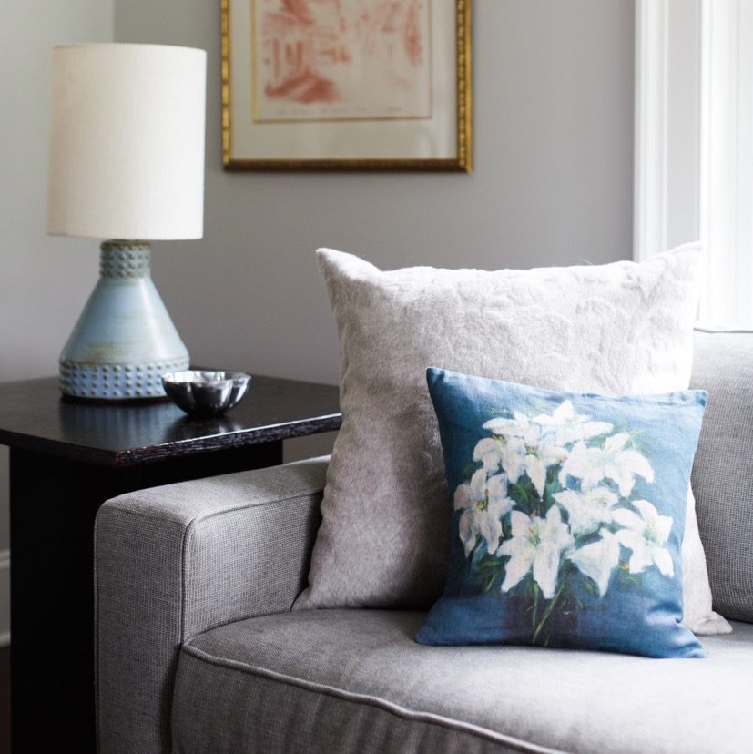
May 10, 2018
The Home – A Place of Elegance May 2018
Elegance is an important term in art, design, and interiors. It can describe many things, but by definition it is a word that describes something notable in its expression – it is something beautiful and refined, something that holds a special essence – a presence that often defies explanation, but just is. In our living […]
Read more →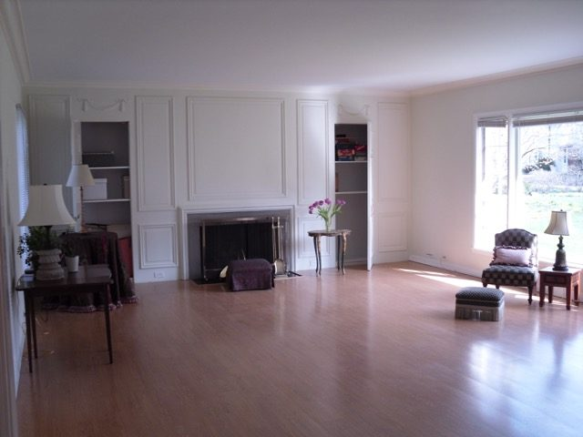
March 29, 2018
The Home – An Experience March 2018
An array of special “things” awaiting placement in a new space – a blank canvas soon to become a home. In our modern culture, as we assess the changing landscape of our world through smart phones, social media, e-shopping, and try to foresee what this and future generations will value – the idea of “the […]
Read more →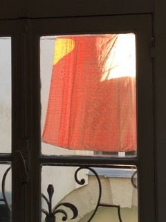
February 10, 2018
Paris Design Week: January 2018
It is one extraordinary week in January, amidst the cold isolated days of winter, that Paris welcomes designers from across the globe to explore the new introductions for interiors. It is a time to gather with colleagues, to view the collections and meet the creative forces behind the beautiful fabrics and furnishings that will shape […]
Read more →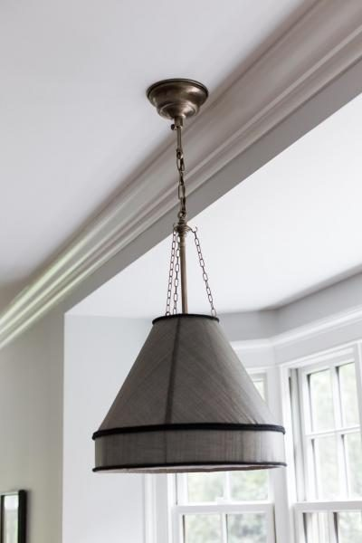
November 13, 2017
ASID Design Excellence Award: Fall 2017
Design can live in the abstract world – creating concepts and exploring a myriad of solutions, self-critiquing, analyzing, and refining – all may be occurring before an idea or drawing is even presented to a client. When designs finally reach client approval and are ready to move forward, a tremendous sense of gratification and accomplishment […]
Read more →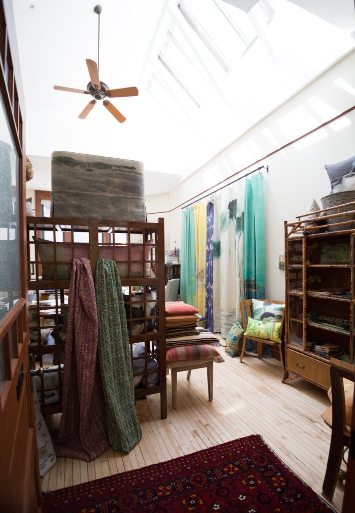
September 11, 2017
Fresh Perspectives…RTD Website 2017
A component of design is analyzing, rethinking and repositioning a viewpoint. Taking what is – and imagining it in a new way. Thoughtful change and reorganization on a small scale can be impactful. One of my great loves is to rearrange things – be it furniture, accessories or art work in my own home, studio […]
Read more →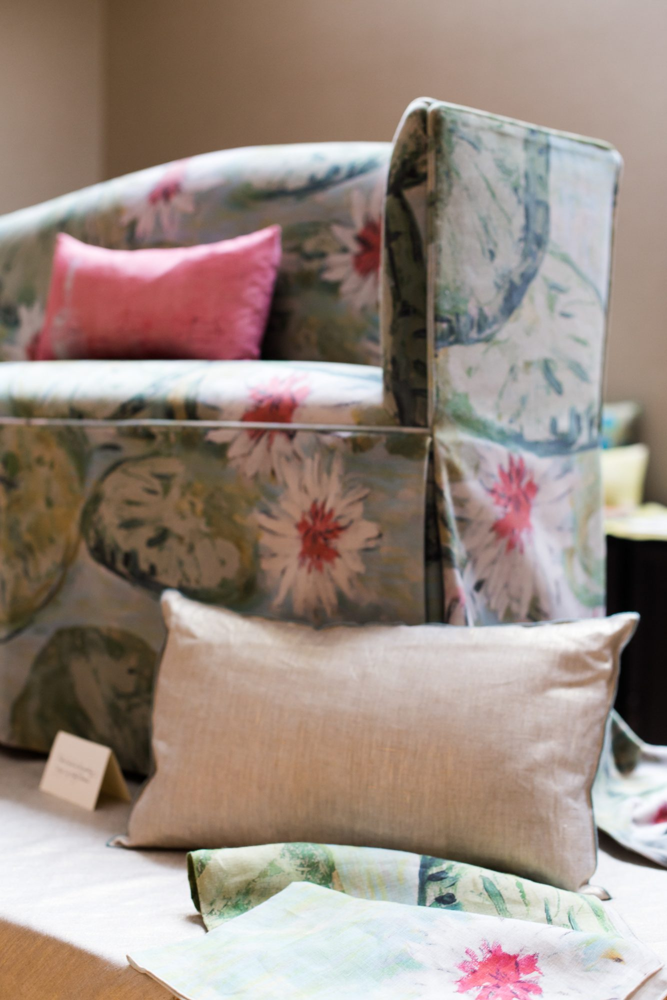
March 14, 2016
Maison Lévy Launch Party at Robin Thomas Design Gallery
On February 24, notable members of the Chicago design community joined us for the official launch of the Maison Lévy collection in the historic Tree Studios, an intimate celebration of art, design, conversation, bubbly and French fare. Enjoy a brief escape to Paris through our favorite photos of the evening…(Photo credit: Carolina Mariana Rodriguez)
Read more →March 14, 2016
Introducing the Maison Lévy Textile Collection at Robin Thomas Design Gallery
Just two years ago, the Maison Lévy textile collection simply captured me during a visit to Maison & Object in Paris. The beautiful artistry of each pattern and the journey from iconic Parisian scenes to all that a single cup of coffee represents was nothing short of inspiring and it is now one that I […]
Read more →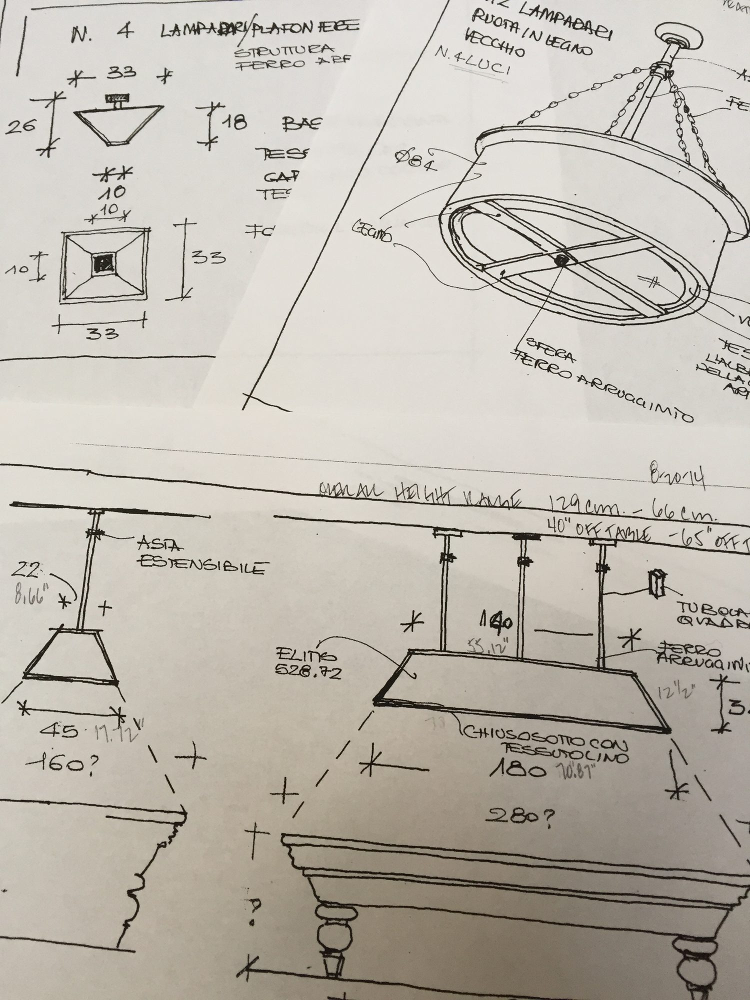
May 10, 2015
Where does inspiration come from……how do project ideas develop?
Where does inspiration come from and how do projects develop are common questions to complex and abstract processes. Design ideas and inspiration can evolve from unique challenges that push us towards new ideas. Solutions are not always simply found in our library or in the isolation of searching the internet or sketching at the drawing […]
Read more →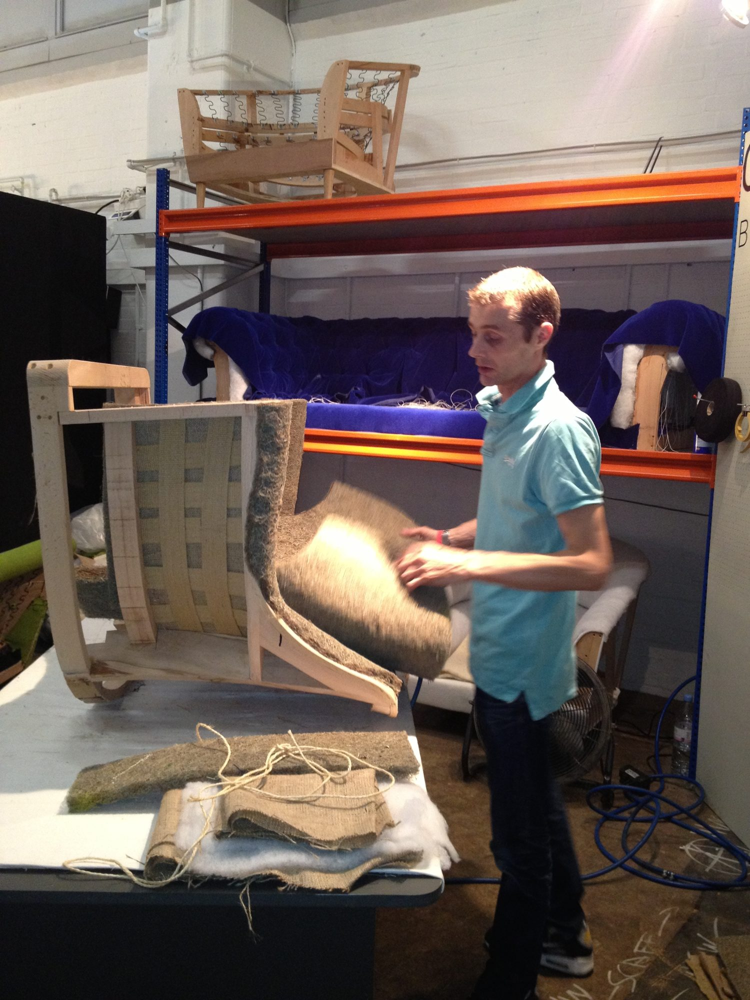
December 3, 2014
Design exhibits: London September 2014 (The experience)
This past fall, London felt saturated in design with numerous shows and exhibits scattered throughout the city …… Decorex, designjunction and Focus 14, along with a special show at the Victorian & Albert Museum…..creativity filled the city for nearly two weeks. Designers from all over the world were there to exhibit and to attend. The […]
Read more →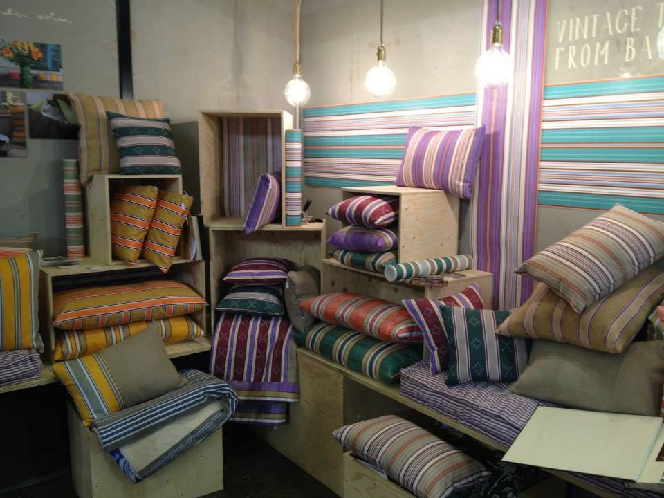
November 24, 2014
A look back at design in 2014
With the year coming to an end, now seems like the perfect time to recap the design highlights of 2014. From Paris to London, all the way back to Chicago, the year has brought a worldwide tour of emerging trends and innovative styles. Join in on the journey. Maison&Objet, Deco Off, Paris Flea Market (Paris) […]
Read more →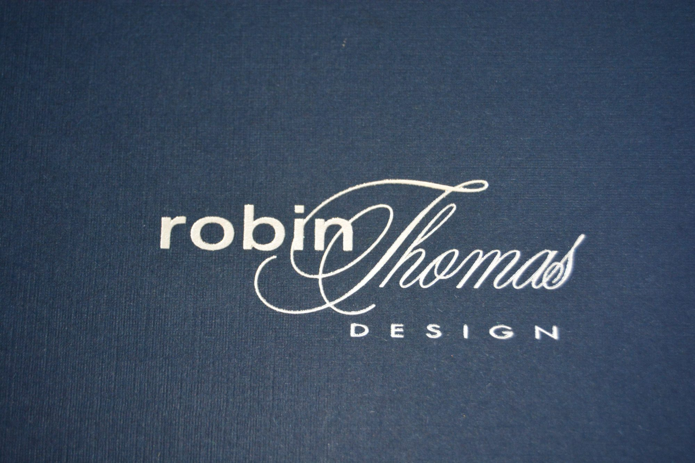
November 17, 2014
We’ve moved!
Robin Thomas Design is pleased to announce the launch of a new studio. Please find the address for the new studio location listed below. As part of the new space, Robin Thomas Design will soon be introducing a gallery of custom-made design pieces from around the world. Stay tuned for more updates over the coming […]
Read more →